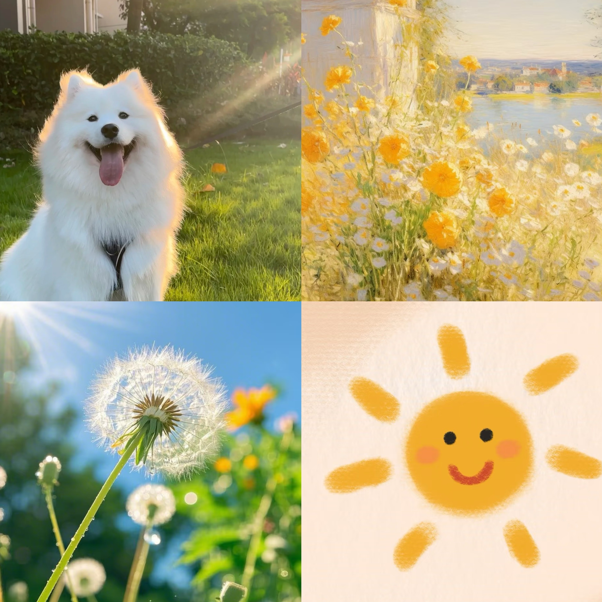

Chatbot树洞
Hi! 欢迎参加我们的在线实验！
在这个实验中，您将与我们训练的机器人进行互动。首先，我们邀请您分享一段自己的亲身经历。我们的机器人会与您进行交流，帮助您更深入地探讨您的故事。最后，我们会请您填写一份简短的问卷，以帮助我们更好地理解您的体验。
整个实验全程匿名，您无需提供任何可识别身份的个人信息！请放松心情，享受与机器人的对话过程。感谢您的参与！
在此期间，如果您出现任何不适，可随时终止实验。
① 您在下面这些图片中感受到了什么情绪？请把答案打在下方的空白框。
② 请您回忆在过去一周内，您亲身经历的一件最开心的事情。这件事或许会让您感到快乐/爱/感激/兴奋/自豪/满足/希望/激励/放松等。
（您可以随意地将这件事输入在下方的空白框内）
③ 请您根据实际情况，填写初始问卷（问卷完成后，请勿忘记点击“提交”）：
💡 提醒：问卷完成后，请务必点击 “提交” 按钮，否则无法记录您的答卷。
④ 下面请向我们的聊天机器人小南讲述刚才这件开心的事，并就这件事与她展开自由讨论，您可以向ta表达您的任何心情、任何想法（在下方聊天框内输入并发送）。
注意1⚠️ 当您想要结束对话时，请向聊天框中直接发送您的实验编号，例如“14”。若未在最后发送实验编号，实验会被视为无效，您将无法领取酬金💰
注意2⚠️ 您需要在与 chatbot 的对话聊天框内发送至少5条信息（不包含用于终止对话的编号），否则，您将无法领取酬金💰~建议聊天时长为5-15分钟~
⑤ 与机器人交互完成后，请您根据实际情况，如实填写以下问卷（问卷完成后，请勿忘记点击“提交”）：
💡 提醒：问卷完成后，请务必点击 “提交” 按钮，否则无法记录您的答卷。
实验已结束，感谢您的配合！